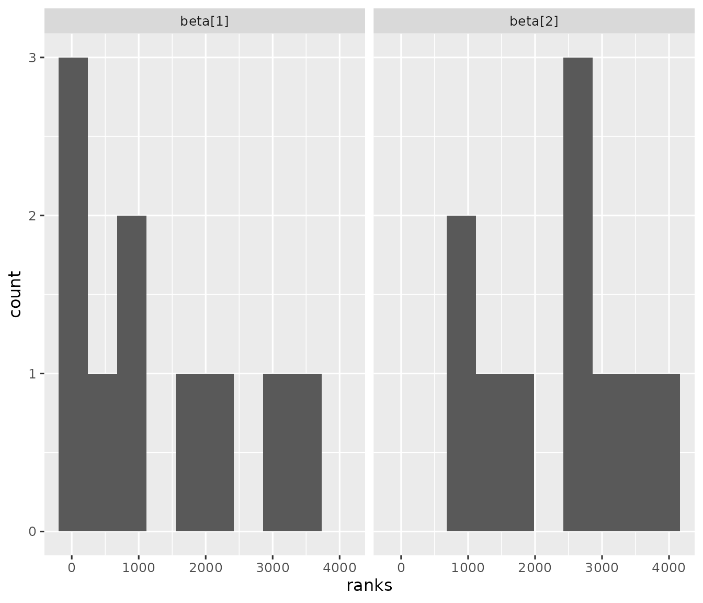

Background
The introductory vignette vignette caters to Bayesian data analysis workflows with few datasets to analyze. However, it is sometimes desirable to run one or more Bayesian models repeatedly across multiple simulated datasets. Examples:
- Validate the implementation of a Bayesian model using simulation.
- Simulate a randomized controlled experiment to explore frequentist properties such as power and Type I error.
This vignette focuses on (1).
Example project
Visit https://github.com/wlandau/stantargets-example-validation for an example project based on this vignette. The example has an RStudio Cloud workspace which allows you to run the project in a web browser.
Interval-based model validation pipeline
This particular example uses the concept of calibration that Bob Carpenter explains here (Carpenter 2017). The goal is to simulate multiple datasets from the model below, analyze each dataset, and assess how often the estimated posterior intervals cover the true parameters from the prior predictive simulations. If coverage is no systematically different from nominal, this is evidence that the model was implemented correctly. The quantile method by Cook et al. (2006) generalizes this concept, and simulation-based calibration (Talts et al. 2020) generalizes further. The interval-based technique featured in this vignette is not as robust as SBC, but it may be more expedient for large models because it does not require visual inspection of multiple histograms. See a later section in this vignette for an example of simulation-based calibration on this same model.
lines <- "data {
int <lower = 1> n;
vector[n] x;
vector[n] y;
}
parameters {
vector[2] beta;
}
model {
y ~ normal(beta[1] + x * beta[2], 1);
beta ~ normal(0, 1);
}"
writeLines(lines, "model.stan")Next, we define a pipeline to simulate multiple datasets and fit each
dataset with the model. In our data-generating function, we put the true
parameter values of each simulation in a special .join_data
list. stantargets will automatically join the elements of
.join_data to the correspondingly named variables in the
summary output. This will make it super easy to check how often our
posterior intervals capture the truth. As for scale, generate 10
datasets (5 batches with 2 replications each) and run the model on each
of the 10 datasets.1 By default, each of the 10 model runs
computes 4 MCMC chains with 2000 MCMC iterations each (including
burn-in) and you can adjust with the chains,
iter_sampling, and iter_warmup arguments of
tar_stan_mcmc_rep_summary().
# _targets.R
library(targets)
library(stantargets)
options(crayon.enabled = FALSE)
# Use computer memory more sparingly:
tar_option_set(memory = "transient", garbage_collection = TRUE)
simulate_data <- function(n = 10L) {
beta <- rnorm(n = 2, mean = 0, sd = 1)
x <- seq(from = -1, to = 1, length.out = n)
y <- rnorm(n, beta[1] + x * beta[2], 1)
list(
n = n,
x = x,
y = y,
.join_data = list(beta = beta)
)
}
list(
tar_stan_mcmc_rep_summary(
model,
"model.stan",
simulate_data(), # Runs once per rep.
batches = 5, # Number of branch targets.
reps = 2, # Number of model reps per branch target.
variables = "beta",
summaries = list(
~posterior::quantile2(.x, probs = c(0.025, 0.975))
),
stdout = R.utils::nullfile(),
stderr = R.utils::nullfile()
)
)We now have a pipeline that runs the model 10 times: 5 batches (branch targets) with 2 replications per batch.
tar_visnetwork()
#> Warning message:
#> package ‘targets’ was built under R version 4.6.1Run the computation with tar_make()
tar_make()
#> + model_batch dispatched
#> ✔ model_batch completed [0ms, 98 B]
#> + model_file_model dispatched
#> ✔ model_file_model completed [4.7s, 2.67 MB]
#> + model_data declared [5 branches]
#> ✔ model_data completed [5ms, 2.54 kB]
#> + model_model declared [5 branches]
#> ✔ model_model completed [5.8s, 6.34 kB]
#> + model dispatched
#> ✔ model completed [0ms, 2.90 kB]
#> ✔ ended pipeline [11.8s, 13 completed, 0 skipped]
#> Warning message:
#> package ‘targets’ was built under R version 4.6.1The result is an aggregated data frame of summary statistics, where
the .rep column distinguishes among individual replicates.
We have the posterior intervals for beta in columns
q2.5 and q97.5. And thanks to
.join_data in simulate_data(), there is a
special .join_data column in the output to indicate the
true value of each parameter from the simulation.
tar_load(model)
model
#> # A tibble: 20 × 9
#> variable q2.5 q97.5 .join_data .rep .dataset_id .seed .file .name
#> <chr> <dbl> <dbl> <dbl> <chr> <chr> <int> <chr> <chr>
#> 1 beta[1] 0.359 1.55 0.449 be2f145… model_data… 5.71e8 mode… model
#> 2 beta[2] -1.74 0.0464 -0.712 be2f145… model_data… 5.71e8 mode… model
#> 3 beta[1] 1.51 2.69 2.18 ef03cb8… model_data… 1.03e9 mode… model
#> 4 beta[2] -0.806 0.873 0.315 ef03cb8… model_data… 1.03e9 mode… model
#> 5 beta[1] 0.544 1.71 0.892 1a5d27a… model_data… 1.92e9 mode… model
#> 6 beta[2] 1.40 3.21 1.98 1a5d27a… model_data… 1.92e9 mode… model
#> 7 beta[1] 1.35 2.54 1.33 aec745e… model_data… 1.95e9 mode… model
#> 8 beta[2] -0.926 0.810 -0.454 aec745e… model_data… 1.95e9 mode… model
#> 9 beta[1] -0.0663 1.12 0.0642 5972613… model_data… 7.78e8 mode… model
#> 10 beta[2] 0.000651 1.79 1.12 5972613… model_data… 7.78e8 mode… model
#> 11 beta[1] -0.130 1.04 0.403 9274f1b… model_data… 1.90e9 mode… model
#> 12 beta[2] -0.992 0.732 0.868 9274f1b… model_data… 1.90e9 mode… model
#> 13 beta[1] -1.09 0.143 -0.262 2624ff1… model_data… 3.01e8 mode… model
#> 14 beta[2] 0.836 2.56 1.66 2624ff1… model_data… 3.01e8 mode… model
#> 15 beta[1] -0.406 0.809 -0.548 94540fa… model_data… 5.21e8 mode… model
#> 16 beta[2] 0.680 2.43 1.39 94540fa… model_data… 5.21e8 mode… model
#> 17 beta[1] -0.998 0.152 -0.120 fd6c8fc… model_data… 1.10e9 mode… model
#> 18 beta[2] -0.117 1.66 0.931 fd6c8fc… model_data… 1.10e9 mode… model
#> 19 beta[1] -2.06 -0.880 -1.75 562b227… model_data… 1.34e9 mode… model
#> 20 beta[2] -1.93 -0.179 -0.474 562b227… model_data… 1.34e9 mode… modelNow, let’s assess how often the estimated 95% posterior intervals
capture the true values of beta. If the model is
implemented correctly, the coverage value below should be close to 95%.
(Ordinarily, we would increase
the number of batches and reps per batch and run batches in
parallel computing.)
library(dplyr)
model %>%
group_by(variable) %>%
summarize(coverage = mean(q2.5 < .join_data & .join_data < q97.5))
#> # A tibble: 2 × 2
#> variable coverage
#> <chr> <dbl>
#> 1 beta[1] 0.8
#> 2 beta[2] 0.9For maximum reproducibility, we should express the coverage assessment as a custom function and a target in the pipeline.
# _targets.R
library(targets)
library(stantargets)
simulate_data <- function(n = 10L) {
beta <- rnorm(n = 2, mean = 0, sd = 1)
x <- seq(from = -1, to = 1, length.out = n)
y <- rnorm(n, beta[1] + x * beta[2], 1)
list(
n = n,
x = x,
y = y,
.join_data = list(beta = beta)
)
}
list(
tar_stan_mcmc_rep_summary(
model,
"model.stan",
simulate_data(),
batches = 5, # Number of branch targets.
reps = 2, # Number of model reps per branch target.
variables = "beta",
summaries = list(
~posterior::quantile2(.x, probs = c(0.025, 0.975))
),
stdout = R.utils::nullfile(),
stderr = R.utils::nullfile()
),
tar_target(
coverage,
model %>%
group_by(variable) %>%
summarize(coverage = mean(q2.5 < .join_data & .join_data < q97.5))
)
)The new coverage target should the only outdated target,
and it should be connected to the upstream model
target.
tar_visnetwork()
#> + model_data declared [5 branches]
#> + model_model declared [5 branches]
#> Warning message:
#> package ‘targets’ was built under R version 4.6.1When we run the pipeline, only the coverage assessment should run. That way, we skip all the expensive computation of simulating datasets and running MCMC multiple times.
tar_make()
#> + model_data declared [5 branches]
#> + model_model declared [5 branches]
#> + coverage dispatched
#> ✔ coverage completed [7ms, 175 B]
#> ✔ ended pipeline [178ms, 1 completed, 13 skipped]
#> Warning message:
#> package ‘targets’ was built under R version 4.6.1
tar_read(coverage)
#> # A tibble: 2 × 2
#> variable coverage
#> <chr> <dbl>
#> 1 beta[1] 0.8
#> 2 beta[2] 0.9Multiple models
tar_stan_rep_mcmc_summary() and similar functions allow
you to supply multiple Stan models. If you do, each model will share the
the same collection of datasets, and the .dataset_id column
of the model target output allows for custom analyses that compare
different models against each other. Suppose we have a new model,
model2.stan.
lines <- "data {
int <lower = 1> n;
vector[n] x;
vector[n] y;
}
parameters {
vector[2] beta;
}
model {
y ~ normal(beta[1] + x * x * beta[2], 1); // Regress on x^2 instead of x.
beta ~ normal(0, 1);
}"
writeLines(lines, "model2.stan")To set up the simulation workflow to run on both models, we add
model2.stan to the stan_files argument of
tar_stan_rep_mcmc_summary(). And in the coverage summary
below, we group by .name to compute a coverage statistic
for each model.
# _targets.R
library(targets)
library(stantargets)
simulate_data <- function(n = 10L) {
beta <- rnorm(n = 2, mean = 0, sd = 1)
x <- seq(from = -1, to = 1, length.out = n)
y <- rnorm(n, beta[1] + x * beta[2], 1)
list(
n = n,
x = x,
y = y,
.join_data = list(beta = beta)
)
}
list(
tar_stan_mcmc_rep_summary(
model,
c("model.stan", "model2.stan"), # another model
simulate_data(),
batches = 5,
reps = 2,
variables = "beta",
summaries = list(
~posterior::quantile2(.x, probs = c(0.025, 0.975))
),
stdout = R.utils::nullfile(),
stderr = R.utils::nullfile()
),
tar_target(
coverage,
model %>%
group_by(.name, variable) %>%
summarize(coverage = mean(q2.5 < .join_data & .join_data < q97.5))
)
)In the graph below, notice how targets model_model and
model_model2 are both connected to model_data
upstream. Downstream, model is equivalent to
dplyr::bind_rows(model_model, model_model2), and it will
have special columns .name and .file to
distinguish among all the models.
tar_visnetwork()
#> + model_data declared [5 branches]
#> + model_model2 declared [5 branches]
#> + model_model declared [5 branches]
#> Warning message:
#> package ‘targets’ was built under R version 4.6.1Simulation-based calibration
This section explores a more rigorous validation study which adopts
the proper simulation-based calibration (SBC) method from (Talts et al. 2020). To use this method, we need
a function that generates rank statistics from a simulated dataset and a
data frame of posterior draws. If the model is implemented correctly,
these rank statistics will be uniformly distributed for each model
parameter. Our function will use the calculate_ranks_draws_matrix()
function from the SBC R package
(Kim et al. 2022).
get_ranks <- function(data, draws) {
draws <- select(draws, starts_with(names(data$.join_data)))
truth <- map_dbl(
names(draws),
~eval(parse(text = .x), envir = data$.join_data)
)
out <- SBC::calculate_ranks_draws_matrix(truth, as_draws_matrix(draws))
as_tibble(as.list(out))
}To demonstrate this function, we simulate a dataset,
simulate_data <- function(n = 10L) {
beta <- rnorm(n = 2, mean = 0, sd = 1)
x <- seq(from = -1, to = 1, length.out = n)
y <- rnorm(n, beta[1] + x * beta[2], 1)
list(
n = n,
x = x,
y = y,
.join_data = list(beta = beta)
)
}
data <- simulate_data()
str(data)
#> List of 4
#> $ n : int 10
#> $ x : num [1:10] -1 -0.778 -0.556 -0.333 -0.111 ...
#> $ y : num [1:10] -4.093 -1.604 -0.92 -0.337 -3.25 ...
#> $ .join_data:List of 1
#> ..$ beta: num [1:2] -1.4 0.255we make up a hypothetical set of posterior draws,
draws <- tibble(`beta[1]` = rnorm(100), `beta[2]` = rnorm(100))
draws
#> # A tibble: 100 × 2
#> `beta[1]` `beta[2]`
#> <dbl> <dbl>
#> 1 2.07 0.259
#> 2 -1.63 -0.442
#> 3 0.512 0.569
#> 4 -1.86 2.13
#> 5 -0.522 0.425
#> 6 -0.0526 -1.68
#> 7 0.543 0.249
#> 8 -0.914 1.07
#> 9 0.468 2.04
#> 10 0.363 0.449
#> # ℹ 90 more rowsand we call get_ranks() to get the SBC rank statistics
for each model parameter.
library(dplyr)
library(posterior)
library(purrr)
get_ranks(data = data, draws = draws)
#> # A tibble: 1 × 2
#> `beta[1]` `beta[2]`
#> <dbl> <dbl>
#> 1 10 53To put this into practice in a pipeline, we supply the symbol
get_ranks to the transform argument of
tar_stan_mcmc_rep_draws(). That way, instead of a full set
of draws, each replication will return only the output of
get_ranks() on those draws (plus a few helper columns). If
supplied, the transform argument of
tar_stan_mcmc_rep_draws() must be the name of a function in
the pipeline. This function must accept arguments data and
draws, and it must return a data frame.
# _targets.R
library(targets)
library(stantargets)
tar_option_set(packages = c("dplyr", "posterior", "purrr", "tibble"))
simulate_data <- function(n = 10L) {
beta <- rnorm(n = 2, mean = 0, sd = 1)
x <- seq(from = -1, to = 1, length.out = n)
y <- rnorm(n, beta[1] + x * beta[2], 1)
list(
n = n,
x = x,
y = y,
.join_data = list(beta = beta)
)
}
get_ranks <- function(data, draws) {
draws <- select(draws, starts_with(names(data$.join_data)))
truth <- map_dbl(
names(draws),
~eval(parse(text = .x), envir = data$.join_data)
)
out <- SBC::calculate_ranks_draws_matrix(truth, as_draws_matrix(draws))
as_tibble(as.list(out))
}
list(
tar_stan_mcmc_rep_draws(
model,
c("model.stan"),
simulate_data(),
batches = 5,
reps = 2,
variables = "beta",
stdout = R.utils::nullfile(),
stderr = R.utils::nullfile(),
transform = get_ranks # Supply the transform to get SBC ranks.
)
)Our new function get_ranks() is a dependency of one of
our downstream targets, so any changes to get_ranks() will
force the results to refresh in the next run of the pipeline.
tar_visnetwork()
#> + model_data declared [5 branches]
#> + model_model declared [5 branches]
#> Warning message:
#> package ‘targets’ was built under R version 4.6.1Let’s run the pipeline to compute a set of rank statistics for each simulated dataset.
tar_make()
#> + model_data declared [5 branches]
#> + model_model declared [5 branches]
#> ✔ model_model completed [6.1s, 4.38 kB]
#> ✔ ended pipeline [6.8s, 5 completed, 7 skipped]
#> Warning message:
#> package ‘targets’ was built under R version 4.6.1We have a data frame of rank statistics with one row per simulation rep and one column per model parameter.
tar_load(model_model)
model_model
#> # A tibble: 10 × 7
#> `beta[1]` `beta[2]` .rep .dataset_id .seed .file .name
#> <dbl> <dbl> <chr> <chr> <int> <chr> <chr>
#> 1 190 2444 e4c40d64f73a2645 model_data_5fcdec5f8… 5.71e8 mode… model
#> 2 2406 2902 e8cb87f562257cd0 model_data_5fcdec5f8… 1.03e9 mode… model
#> 3 868 972 1cce3b1262ed409b model_data_b6c9a1833… 1.92e9 mode… model
#> 4 77 740 872064d78a80c709 model_data_b6c9a1833… 1.95e9 mode… model
#> 5 265 2803 dc5816106f55e6f2 model_data_5db435494… 7.78e8 mode… model
#> 6 1621 3947 2b1a2bb9e998e263 model_data_5db435494… 1.90e9 mode… model
#> 7 3050 1863 12b5175aee17f142 model_data_4a40cb783… 3.01e8 mode… model
#> 8 25 1420 549bd80f183be212 model_data_4a40cb783… 5.21e8 mode… model
#> 9 3410 2613 0b892d9d8c225f3e model_data_104af6d50… 1.10e9 mode… model
#> 10 743 3580 29973d97ee2f3be6 model_data_104af6d50… 1.34e9 mode… modelIf the model is implemented correctly, then each the rank statistics each model parameter should be uniformly distributed. In practice, you may need thousands of simulation reps to make a judgment.
library(ggplot2)
library(tidyr)
model_model %>%
pivot_longer(
starts_with("beta"),
names_to = "parameter",
values_to = "ranks"
) %>%
ggplot(.) +
geom_histogram(aes(x = ranks), bins = 10) +
facet_wrap(~parameter) +
theme_gray(12)